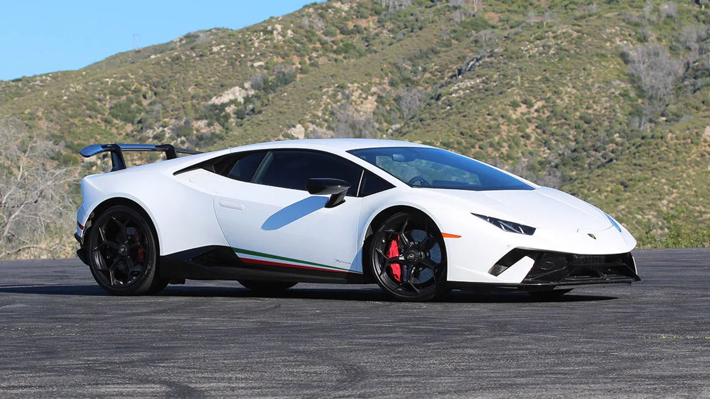

BackEnd

La Yamaha MT-09 es un motocicleta estándar de motor en línea tricilíndrica de 847 cc. Tiene el nuevo motor tipo "desaxé", un marco de aleación de aluminio, y horquilla invertida.

Las versiones que maneja el Ford Mustang cuentan con motores 4 cilindros y V8, y sus precios inician en 880,800 pesos.

El Lamborghini Huracán Performante (2017-2019) tiene un motor gasolina de 5204 cc con 10 cilindros situados en v que alcanza una potencia máxima de 639 CV a 8000 rpm y par máximo de 600 nm a 6500 rpm.
Noticias
- Framework
- Librerias
- Texting
 El Lamborghini Huracán Performante (2017-2019) tiene un motor gasolina de 5204 cc con 10 cilindros situados en v que alcanza una potencia máxima de 639 CV a 8000 rpm y par máximo de 600 nm a 6500 rpm.
El Lamborghini Huracán Performante (2017-2019) tiene un motor gasolina de 5204 cc con 10 cilindros situados en v que alcanza una potencia máxima de 639 CV a 8000 rpm y par máximo de 600 nm a 6500 rpm.